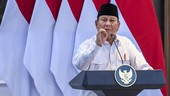
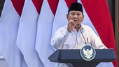
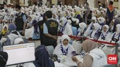
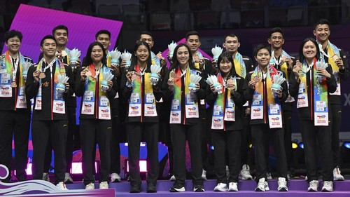

Prabowo: Kita TNI Selalu Dituduh Mau Jadi Diktator
Presiden Prabowo Subianto mengaku heran kalangan TNI kerap dituduh akan menjadi diktator jika memimpin sebuah negara
Selamat datang di AL News, Silahkan Membaca Berita Yang Anda Inginkan. Di AL News Semua Ada
Prabowo: Kita TNI Selalu Dituduh Mau Jadi DiktatorPresiden Prabowo Subianto mengaku heran kalangan TNI kerap dituduh akan menjadi diktator jika memimpin sebuah negara |
Bisakah Biaya Haji Terus Ditekan Seperti Mau Prabowo, Bagaimana?Presiden Prabowo Subianto ingin biaya haji terus diturunkan. Ia belum puas dengan penurunan biaya haji sekitar Rp4 juta di awal 2025 ini. |
Daftar 21 Bank Bangkrut dari 2024 hingga 2025Otoritas Jasa Keuangan (OJK) mencabut izin usaha 21 Bank Perekonomian Rakyat (BPR) sepanjang 2024. Jumlah ini bertambah satu bank lagi pada 2025, menjadikan total 21 bank bangkrut dari 2024 hingga 2025. |
Indonesia dan Trofi Sudirman Cup yang Hanya Melambai dari KejauhanTrofi Piala Sudirman 2025 tidak bisa dibawa pulang. Namun ada rasa puas dan kebanggaan melihat kerja keras dan perjuangan yang telah ditunjukkan Tim Badminton Indonesia selama sepekan. |
Kepala Badan Gizi Nasional (BGN) Dadan Hindayana mengubah mekanisme pembiayaan Program Makan Bergizi Gratis (MBG). Dengan perubahan itu, kini pembayaran MBG tak lagi menggunakan sistem reimburse.
BACA SELENGKAPNYAWakil Ketua Komisi II DPR RI Dede Yusuf mengusulkan pembatasan gugatan hasil pilkada ke Mahkamah Konstitusi (MK). Dede menyoroti soal waktu jabatan kepala daerah yang terdampak imbas gugat menggugat yang tidak berkesudahan di MK.
BACA SELENGKAPNYAKetua PSSI Erick Thohir mengakui Rusia mengirimkan permintaan untuk laga uji coba melawan Timnas Indonesia namun sejauh ini kedua pihak belum menemukan tanggal yang tepat. Erick menyatakan Rusia mengirim surat dan hal itu sudah dijawab oleh PSSI. Namun jadwal yang diinginkan belum disepakati kedua pihak.
BACA SELENGKAPNYAKomunitas Ducatisti Indonesia sukses menyelenggarakan We Ride As One 2025 pada Sabtu (3/5). Bertajuk Rolling Thunder, ajang tahunan yang merupakan bagian dari perayaan global komunitas pengguna Ducati ini diikuti oleh 240 unit motor Ducati dari berbagai daerah.
BACA SELENGKAPNYA